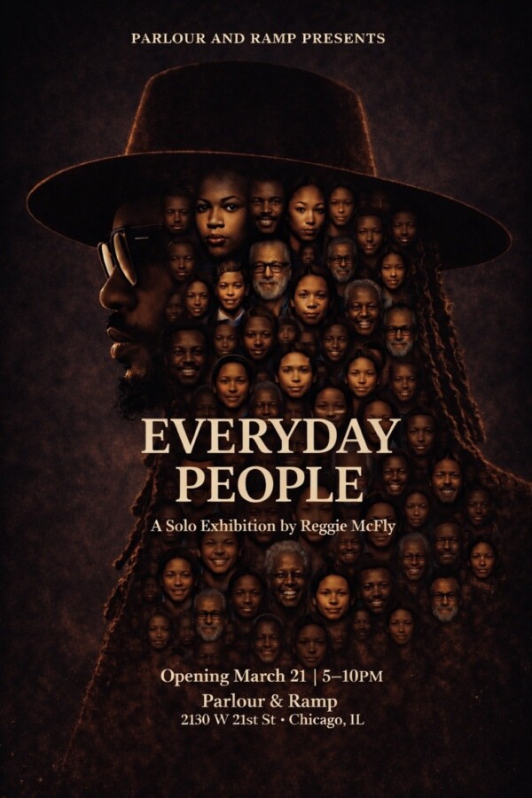

Reggie McFly: Everyday People
Everyday People is a solo exhibition by Chicago based mixed media artist Reggie McFly, reflecting on the lives we pass each day but rarely stop to truly see.
Through layered textures, vibrant color, and tactile elements, McFly captures the presence, individuality, and complexity of everyday life, bringing attention to the stories that often go unnoticed.
This exhibition invites viewers to slow down, observe, and reflect on identity, community, and the unseen narratives that shape our shared human experience, encouraging a deeper recognition of both others and ourselves.